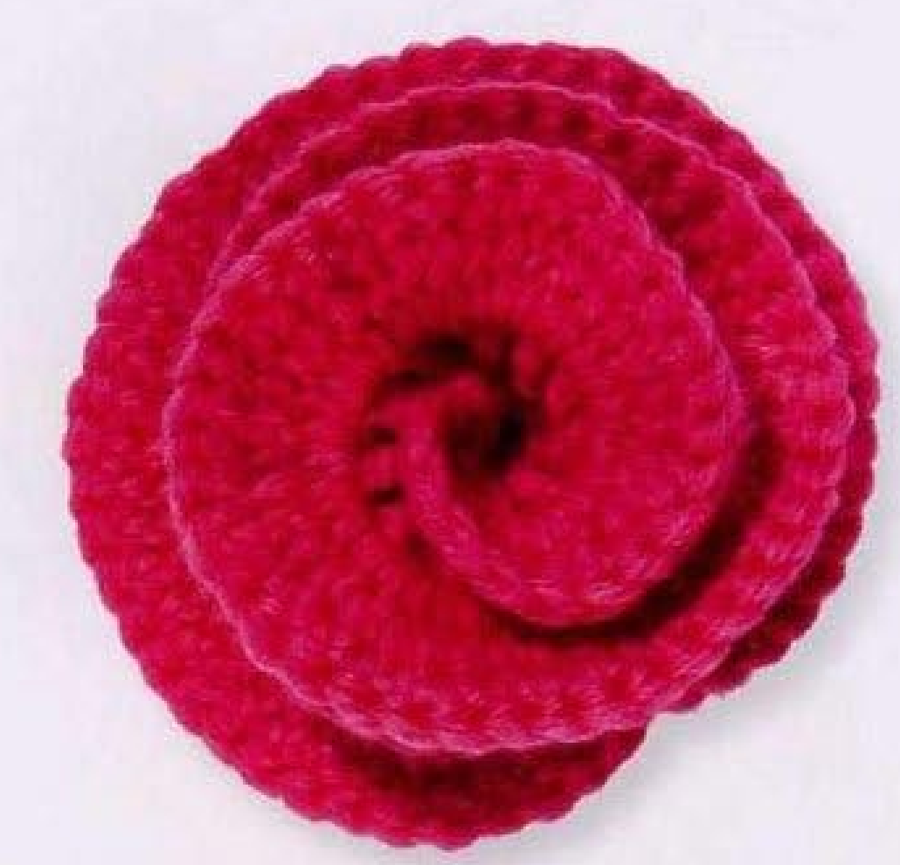
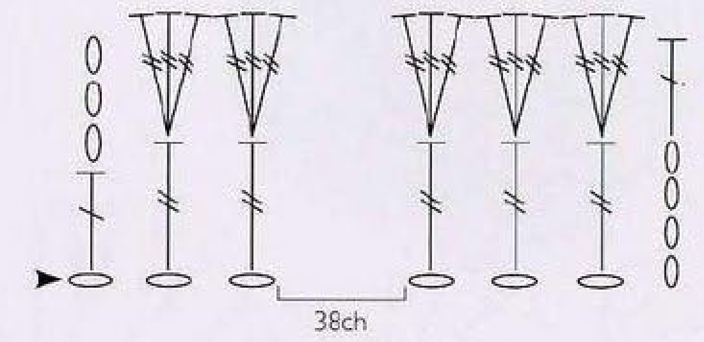
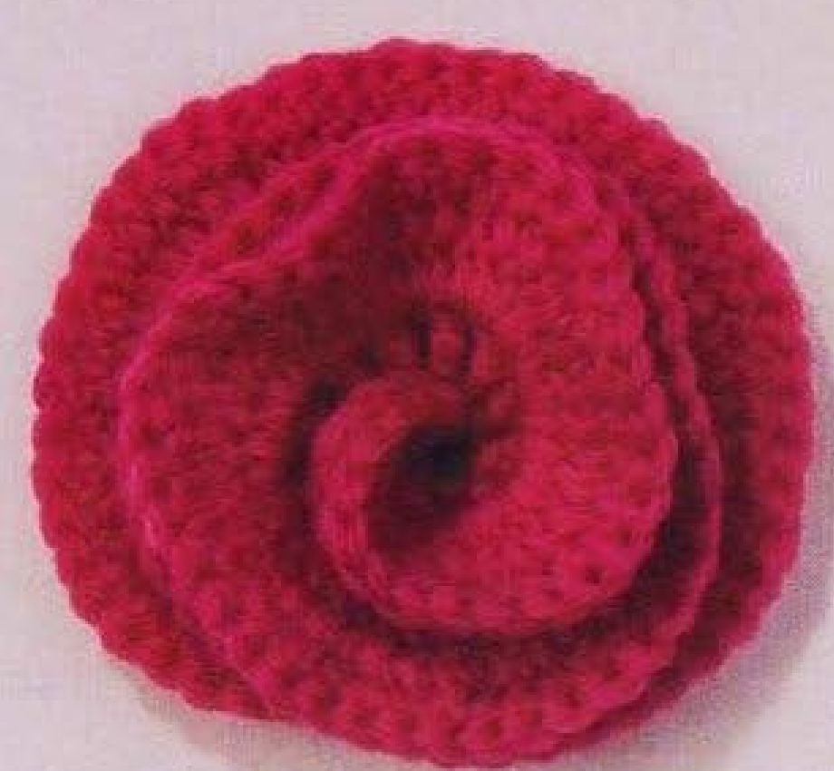

A crochet Flared Rose begins as a narrow strip and becomes a dimensional bloom when the foundation edge is coiled and stitched. Tall wool stitches and a strongly increased second row create the broad flared folds. This guide follows pattern 45 in Lesley Stanfield’s 100 Flowers to Knit & Crochet, translating the UK stitch names into US terms while retaining the source construction and assembly direction.

Key Takeaways
- Use DK wool; the source photograph shows a deep cerise rose.
- Begin with 48 chains and leave a long sewing end.
- Row 1 has 45 counted positions, including the starting chain group.
- Row 2 works three US treble stitches into each of the 43 tall central stitches.
- Coil the foundation edge anticlockwise and secure it as you go.
- Hook size, gauge, yardage, and finished diameter are not specified.
CROCHET FLARED ROSE FLOWER PATTERN
Project: One coiled wool rose made from a two-row strip. The recipe below uses US terminology. The original foundation, increases, long tails, and anticlockwise assembly are preserved; added handling advice is practical guidance.
| Skill level | Not specified in this entry. Practical guidance: familiarity with tall stitches and sewing crochet pieces is helpful. |
|---|---|
| Base size | One dimensional rose. Finished diameter and height are not specified. |
| Yarn | DK wool. A color is not prescribed in the entry; the photographs show deep cerise. |
| Quantity | Not specified. Keep enough matching yarn for the strip and its long assembly tails. |
| Hook and gauge | Not specified. Sample with a hook suited to your chosen DK wool. |
| Notions | Scissors and a blunt yarn needle. Optional removable markers help track repeat positions. |
| US abbreviations | ch = chain; dc = double crochet; tr = treble crochet; RS = right side. UK tr becomes US dc; UK dtr becomes US tr. |
| Foundation | Leave a long yarn end for sewing. Ch 48. |
| Row 1 (RS) | Skip 4 chains. Work 1 tr in each of the next 43 chains, then 1 dc in the final chain. Total: 45 counted positions, including the skipped starting chain group. |
| Row 2 | Ch 3. Work 3 tr into each of the next 43 tr. Work 1 dc into the top chain of the starting ch 4. Fasten off, leaving another long end. |
| Assembly | Extend the increased second-row edge and press appropriately for the wool. Coil the chain edge anticlockwise, starting at the beginning of Row 1. Use the starting long end to stitch as you coil. Catch the Row 2 yarn end and take it down through the center of the completed rose. |
See How a Strip Becomes a Rose
The finished bloom has overlapping curved folds rather than separately crocheted petals. The lower edge of the strip remains comparatively short while the upper edge expands through repeated increases. When you roll the lower chain edge into a coil, the extra fabric at the top has room to flare outward. This difference between the edges is the main shaping idea in the pattern.
Do not judge the unassembled strip by whether it lies completely flat. The second row contains many more stitches than the first row, so it will naturally ripple. That fullness is useful for the rose. The task is to keep the foundation and first-row stitch count correct, then distribute the increases consistently before sewing the coil into its final shape.
The source rose is not built around a yellow center, a stuffed bud, or a separate leaf. Those pieces are not missing from the instructions. Its center forms when the beginning of the strip is rolled inward, and its outer folds come from the rest of the same strip. Adding other parts is possible as a personal adaptation, but they should not be presented as original Flared Rose instructions.
Prepare DK Wool and Two Sewing Tails
The entry specifies DK wool without naming a brand or requiring a particular shade. The book photographs show a saturated cerise flower. A smooth enough wool will make it easier to see the tall stitches while learning the repeat. If you choose a very fuzzy yarn, mark the row ends and count frequently because the stitch tops may become difficult to distinguish.
The pattern asks for a long yarn end at the beginning and another long end when Row 2 is finished. These tails have assembly jobs. Do not trim them short when tidying your work. The beginning tail stitches the foundation edge as it is coiled, and the ending tail is carried down through the center. The source does not supply exact tail lengths, so leave a comfortably usable amount for your own sample.
Choose a hook that allows tall stitches to move smoothly without making the foundation stiff. The yarn label can suggest a starting point; it is not a hook size stated in this pattern. Make a few treble and double crochet stitches in a small practice piece if these stitches are unfamiliar. Prepare a blunt yarn needle that can pass through the base without splitting the wool excessively.
Source specifications: DK wool is given. Hook size, gauge, yarn quantity, finished measurements, and exact tail lengths are not. Any material test or handling suggestion in this guide is added practical advice.
Translate the Tall Stitches Correctly

Two UK stitch names appear in the written instructions. UK double treble, abbreviated dtr, becomes US treble crochet, abbreviated tr here. UK treble, abbreviated tr in the book, becomes US double crochet, abbreviated dc here. Those translations are important because using US double treble where the source says dtr would make the strip taller than intended.
To make a US treble, yarn over twice, insert the hook into the indicated chain or stitch, yarn over, and draw up a loop. Yarn over and pull through two loops three times. To make a US double crochet, yarn over once, draw up a loop through the indicated location, then pull through two loops twice. Keep each stitch’s height relaxed enough to work the next row into its top.
The chart shows the shorter edge stitches alongside the taller central stitches. In the second row, groups of three tall stitches spread from individual stitch tops. The bracketed foundation section abbreviates part of the long strip rather than telling you to make a shorter chain. Follow the full written foundation of 48 chains and the 43 central stitch positions when working your own strip.
Step 1: Chain the Foundation
Leave the beginning yarn end long, then make 48 chains. Count the chains before beginning Row 1. A removable marker every few groups can make this easier, especially if you tend to lose your place. Remove or move markers as appropriate once you establish the row; their role is only to help you track the foundation accurately.
Keep the foundation relaxed. A very tight chain edge can make it difficult to insert the hook and can restrict the base when you coil the finished strip. At the same time, avoid changing tension halfway along the chain. Consistency matters more than making the chain match an invented length, because the source provides a count rather than a measurement.
Identify the first four chains that will be skipped at the beginning of the row. These chains provide the starting height and count as one edge position in the first-row total. They do not leave four empty gaps to fill later. After skipping them, the remaining 44 chains supply 43 tall treble stitches and the final shorter double crochet.
Step 2: Work the First Row
With the right side facing, skip four chains and make one US treble in each of the next 43 chains. Work steadily along the foundation, putting only one treble into each indicated chain. This row establishes the base for the increased second row, so it should not already contain groups of three stitches in one chain.
Make one US double crochet in the final chain. This shorter end stitch balances the edge treatment of the strip. Check that there are 43 treble stitches in the central run and one final double crochet. Together with the skipped starting chain group, these give the source’s total of 45 counted positions for Row 1.
The numerical check is useful: 48 foundation chains minus four skipped chains leaves 44 chains to work into. Those become 43 tr and one dc. If you reach the end before making all 43 tr, recount the foundation and check whether you skipped too many chains or accidentally worked twice into one. Resolve the first row before turning for the increases.
Row 1 checkpoint: Count the central run separately. It should contain exactly 43 US treble stitches. The final US double crochet and starting chain group bring the counted total to 45.
Step 3: Flare the Second Row
Turn and chain three. Work three US treble stitches into the next treble stitch of Row 1. All three share the same base stitch. Move to the following treble and repeat the three-stitch group. Continue until you have worked a group into each of the 43 central treble stitches. Do not increase into the shorter end stitch as an extra group.
A group is complete only after all three treble stitches have been finished. If you are interrupted, mark the base stitch or note how many stitches of the current group are already done. Counting groups is often easier than counting every stitch across the increasingly ruffled edge. You need 43 three-stitch groups, which contain 129 worked treble stitches altogether.
At the opposite end, make one US double crochet into the top chain of the original four-chain starting group. This completes the edge treatment. Fasten off with a long end. The source does not print a separate second-row total; if you count the chain-three edge as one position alongside the 129 tr and final dc, the arithmetic gives 131 positions.
Notice how the upper edge now ripples. That is expected from putting three stitches into every central base stitch. Spread the increased groups gently and compare them rather than trying to straighten the strip into a flat rectangle. If only one area looks unusually crowded or thin, inspect its group for four stitches or two instead of the required three.
Why the Increase Matters
The foundation edge anchors the coil while the expanded second-row edge forms the visible folds. Pulling the upper edge into the same short line as the base would suppress the flare. Keep the two edges distinct when shaping and sewing.
Prepare the Strip for Coiling
The source tells you to extend the increased edge and press it. Treat that as shaping guidance for the wool, not as permission to apply an arbitrary high heat. Follow the yarn’s care instructions and test any pressing or steaming method on a sample. The entry gives no temperature, pressing duration, or finished blocking dimensions.
Support the lower chain edge while opening the flared upper edge. The aim is to let the fullness spread so that the folds can settle around one another during assembly. Avoid stretching individual stitch tops sharply. Once the strip is shaped, check the long tails and the beginning of Row 1 before rolling; it is easier to identify these points while the piece is open.
If the wool is delicate or you are uncertain about its heat response, pause to test the method rather than pressing the finished strip blindly. Any alternative handling method you choose is practical adaptation. The original shaping instruction remains to extend and press the increased edge before assembling the rose.
Coil Anticlockwise and Stitch the Base
Begin at the start of Row 1 and coil the foundation chain edge anticlockwise, as specified. Use the beginning long yarn end to stitch as you go. Keep the sewing concentrated along the base so the expanded upper edge can form its folds. Small secure stitches through neighboring base sections help the coil hold without sewing every visible fold flat.
Turn the growing flower periodically and inspect both the front and back. The front should show layered curved folds, while the back should hold the coil securely. If the center collapses into a dense knot, loosen the arrangement before taking more stitches. If the coil unwinds, check the base stitches rather than pulling the entire strip tighter.
Complete the coil, catch the yarn end left from Row 2, and take that end down through the center of the rose. This brings the end to the underside for securing. Do not cut it at the upper edge and leave a visible loose finish among the folds. Tidy the ends after checking that the rose holds its arrangement without your fingers supporting it.

Troubleshoot the Coiled Rose
The strip has too little flare
Check that Row 2 has three treble stitches in every one of the 43 central base stitches. One stitch per base would preserve nearly the same width as Row 1, and two per base would create a different amount of fullness. Also check the terminology: these central stitches are US treble, not US double crochet.
The foundation edge is hard to coil
Inspect chain tension and sewing tension separately. A tight foundation can resist bending, while sewing stitches drawn too firmly can make the base rigid. Arrange a short section before fastening it and keep the upper edge free. Do not correct the problem by adding an undocumented foundation extension after the strip is complete.
One section sticks out unevenly
Look for an incorrect increase group or a base sewing stitch that caught the upper edge. With the correct groups, some unevenness may simply be an unsettled fold. Lift and rearrange that part before undoing the crochet. Compare the directory photograph with your overall coiled shape rather than trying to match every fold exactly.
Customization and Suggested Uses
The entry does not require cerise, so you can choose another wool color while keeping the two-row recipe. A different yarn thickness and suitable hook can change the flower’s size, but the source supplies no graded small or large version. Make a complete sample and measure it after assembly if you need it to fit a particular space.
Suggested uses include a decorative applique on a bag, a fabric accessory, or a removable ornament mounted on an appropriate backing. These are additional ideas rather than separate projects supplied with this entry. Secure the flower through its sewn base so the visible folds retain their shape. Test the position before sewing it permanently to a finished item.
Customization tip: A different chain count, increase rate, or extra row changes the design. Label those changes as adaptations instead of presenting them as the original Flared Rose pattern.
Flared Rose at a Glance
- DK wool and two long assembly tails.
- Foundation of 48 chains.
- First row: 43 US tr plus a final US dc and the starting chain group.
- Second row: three US tr per central stitch, with shorter edge treatment.
- Shape, coil anticlockwise, stitch along the foundation, and bring the ending tail through the center.
Conclusion
Flared Rose combines a straightforward strip with deliberate increases and careful assembly. Check the tall stitch names, preserve the 43 central positions, and leave the two long tails available for their finishing jobs. The resulting coil turns the expanded upper edge into layered wool folds. Click the Pin to return to the pattern and source images when you are ready to make your own rose.
Source and Tags
Source: Lesley Stanfield, 100 Flowers to Knit & Crochet, pattern 45 Flared Rose. Instructions and chart are on printed page 68, PDF page 62 in the supplied scan; the directory view is on printed page 22, PDF page 17. Photographs show completed flowers. This guide translates the original UK terms into US terms and identifies additional materials, handling, and use suggestions as practical guidance.
Crochet Flared RoseWool FlowersCoiled RoseTall Crochet StitchesCrochet AppliqueFlower Pattern